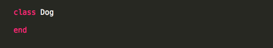
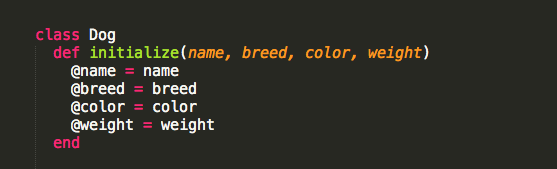
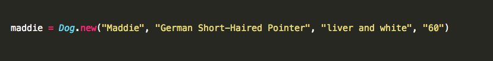
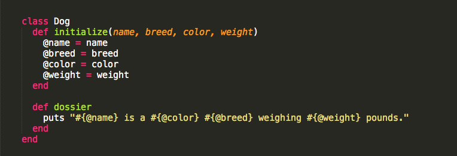
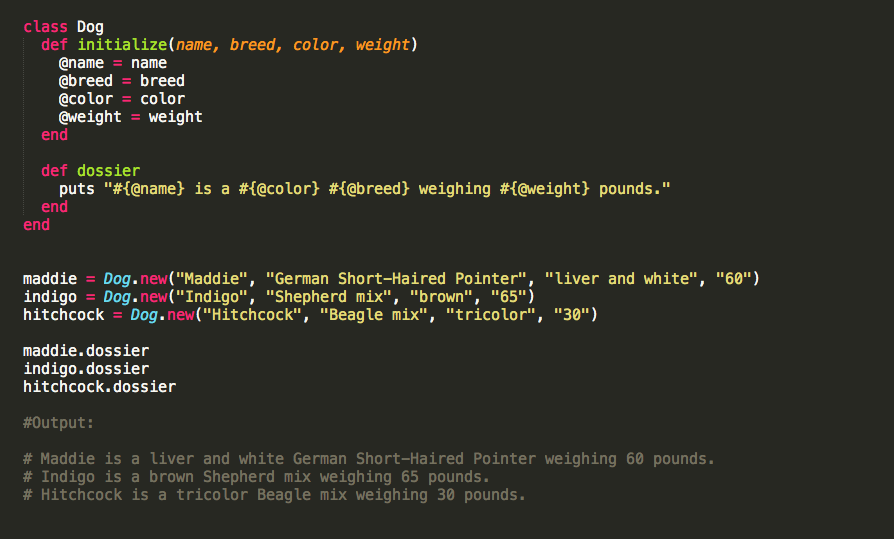

Ruby is an object-oriented programming language.
Everything in Ruby is an object.
Objects have methods and attributes.
Every object is an instance of a class.
A class is a way to organize objects with similar attributes. So you can use a class to create objects by the batch instead of one by one. You define a class with a class keyword and a class name. Class names always begin with a capital letter and use CamelCase (no underscores).
Let's create a class:
So we created a class called Dog. But our class doesn't do anything yet. So let's make it do something by adding some code between the class Dog and end.
Here we have the initialize method that takes four arguments: name, breed, color, and weight. Every time we create a new instance of the Dog class, the initialize method will be executed. Each dog object will be given a name, breed, color, and weight when its created. @ is used to signify an instance variable, meaning it's attached to the instance of a class. For example:
An instance of the class Dog (maddie) has been created. maddie has her own @name ("Maddie"), @breed ("German Short-Haired Pointer"), @color ("liver and white"), and @weight ("60"). So those variables belong to the maddie instance, hence instance variables.
Let's add one more method to our class Dog. We are going to create a method that will print a dossier on each dog. Because this method will be shared by all dogs (all instances of Dog), it is called an instance method. Instance methods don't belong to just one object. Any instance of a class can call them.
Every time the dossier method is called on an instance, the code within that method will be executed. Let's create a couple more instances of the Dog class and call the dossier method on each dog.
As you can see, classes make it much easier to create objects with similar attributes. Now every time we want to print out a dossier for a new dog, we simply create a new instance of the Dog class, add in the data for that dog, and call the dossier method on it. Pretty convenient.